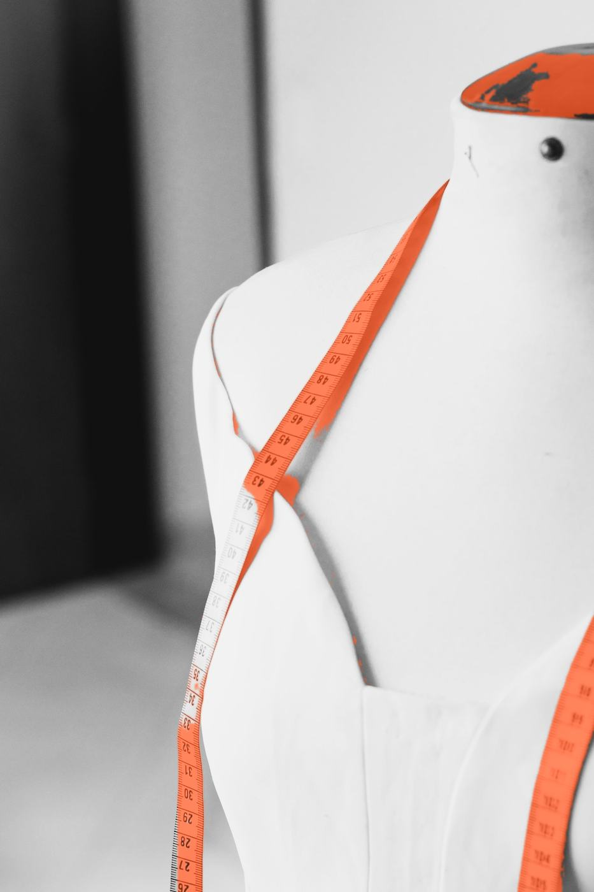
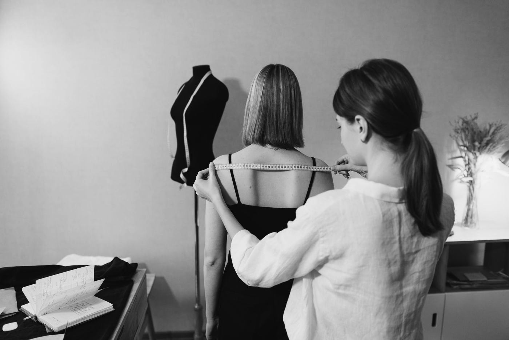
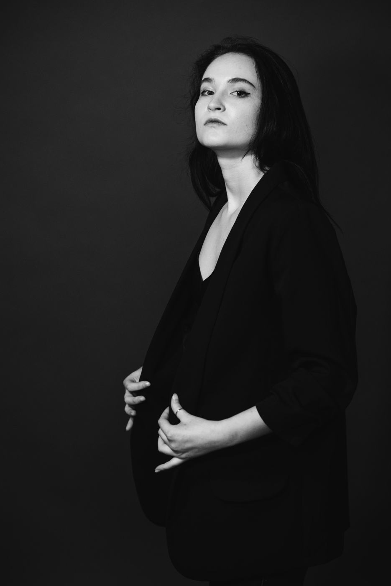

Proposta comercial
Estratégia e gestão de aquisição digital
Sara MeirelesConsultoria de Estilo e Imagem

Outubro 2026
Estratégia, mídia paga, audiências, conversão, inbound e mensuração
Desenvolver e executar uma estratégia de aquisição digital para ampliar a visibilidade da Sara junto ao público qualificado, gerar novas oportunidades comerciais e aumentar as vendas de consultorias e mentorias online.
O trabalho integra mídia paga, inteligência de audiência, otimização de conversão e estratégia de crescimento, conectando o investimento em publicidade aos resultados do negócio.
Definição e evolução da estratégia de crescimento digital, considerando o posicionamento da Sara, seus produtos e o perfil de suas potenciais clientes.
01Segmentação de públicos prioritários, incluindo:
Planejamento, configuração, ativação e otimização de campanhas em três plataformas.
02Principal ambiente de aquisição, relacionamento e conversão, utilizando conteúdos da Sara para alcançar e desenvolver audiências qualificadas.
Captação de demanda qualificada de pessoas que já demonstram interesse por serviços de consultoria de estilo, imagem pessoal e mentorias relacionadas.
Ampliação de alcance, descoberta de marca e construção de novas audiências a partir de conteúdos em vídeo.
Construção e evolução de públicos para melhorar a eficiência da aquisição e reduzir desperdícios no investimento.
03A ativação dessas audiências considera a disponibilidade de dados, os requisitos de cada plataforma e as regras de privacidade aplicáveis.
O trabalho não termina no clique.
Acompanharemos a experiência da potencial cliente desde o primeiro contato com a Sara até a oportunidade comercial e a venda.

Apoio estratégico na criação de novas oportunidades de captação de leads qualificados, especialmente no meio do funil de aquisição.
O escopo contempla concepção estratégica, recomendações de conteúdo e estruturação da lógica de aquisição. Desenvolvimento técnico integral de ferramentas ou páginas poderá ser orçado separadamente.
Acompanhamento contínuo das campanhas e dos indicadores, orientado à eficiência do investimento e à geração de receita.
Anúncio Página Lead Reunião Venda Retorno
06Avaliar eficiência de anúncios e mensagens
Melhorar o aproveitamento do tráfego
Reduzir custo de aquisição de leads
Aumentar a eficiência comercial
Mensurar o investimento para conquistar clientes
Avaliar retorno sobre investimento em publicidade
Os indicadores de vendas e ROAS serão acompanhados conforme a disponibilidade dos dados comerciais e a capacidade de atribuição das conversões. A análise alimentará decisões recorrentes de investimento, segmentação, conteúdos, canais e otimização da jornada.
Os patrocínios representam ativações de conteúdos, não a produção de novas peças. O volume será distribuído conforme a estratégia, os resultados e a verba disponível.
07| Ref. | Entregável | Volume |
|---|---|---|
| Ativação de mídia | ||
| 7.1 | Patrocínios de conteúdos em Meta Ads (Instagram/Facebook) | Até 20/mês |
| 7.2 | Gestão de campanha no Google Ads | 1 campanha ativa |
| 7.3 | Patrocínios de conteúdos no TikTok | Até 10/mês |
| Estratégia e otimização | ||
| 7.4 | Estratégia, segmentações e testes de audiências | Contínuos |
| 7.5 | Remarketing e otimização de campanhas | Contínuos |
| 7.6 | Análise da jornada e recomendações de conversão | Contínuas |
| 7.7 | Apoio estratégico em produtos, ofertas e inbound marketing | Conforme oportunidades |
| Acompanhamento | ||
| 7.8 | Relatório de desempenho e resultados | 1/mês |
| 7.9 | Reuniões de acompanhamento e planejamento | 2/mês |
| 7.10 | Contato e alinhamento operacional | Contínuo |
Responsável pelo planejamento estratégico, definição de canais e audiências, execução e otimização de mídia, inteligência de resultados, evolução da jornada de aquisição e relacionamento estratégico com a Sara.
Responsável pelo suporte à execução das campanhas, configurações técnicas, implementação de estruturas de mídia, acompanhamento operacional e apoio às otimizações.
O investimento contempla a estratégia, gestão e execução da mídia, acompanhamento de indicadores, análises de conversão, reuniões e relacionamento contínuo com a equipe.
R$2.500
por mês
verba de mídia à parte
Mais do que anunciar conteúdos, queremos construir uma operação de aquisição que aprenda, evolua e gere negócios.

Cada campanha, audiência e ponto de contato será observado como parte de uma jornada integrada: da descoberta da Sara ao interesse, da oportunidade comercial à contratação de suas consultorias e mentorias.
A proposta é combinar execução consistente com inteligência estratégica para transformar a presença digital em crescimento comercial sustentável.
Estratégia e Gestão de Aquisição